PR pane responsiveness: before and after
Workspace pull-request pane on branch review-pane-ui (PR #8247), measured 2026-10-07 in the dev app against PR #7209 in the Archive workspace. Every pair below was captured at the same pane width by dragging the split handle over CDP, so the two columns are pixel-comparable. Images are 2x; they display at the pane's real CSS width.
What changed
- One-row top bar. The pane's header row is now a named container (
@container/topbar), the same one the route page already had, so the actions' compact rules finally apply inside a pane. Tabs give up width to the actions instead of the actions wrapping under them. - Staged compaction. Below 30rem the Changes tab drops its +/- diff stat; below 23rem the Merge and Ready-for-review labels fold to the glyph (still read by screen readers). Copy link and Open on GitHub stay as icons at every width.
- Title and gutters scale. The title steps 1.75rem → 1.5rem below 48rem → 1.25rem below 36rem; page gutters go 24px → 16px below 36rem, for the Summary and the Changes title alike.
- Info rows. The label column narrows below 30rem, which is what lets "coderabbitai · Request" sit on one line at 320px.
- No sideways overflow. From the review round: the scroll viewport's
display:tablewrapper is forced to block, so long code tokens cannot push the Summary wider than the pane.
All of it is container queries on the pane itself, not on the window, so a narrow pane in a wide window and a narrow window behave the same. The full-page route is untouched except for the shared thresholds, which were chosen so its wider top bar (list toggle + Send to agent) still fits.
Top bar at four widths (after)
320 and 400px: diff stat hidden; 320px also folds the Merge label. 520 and 570px: everything shown.
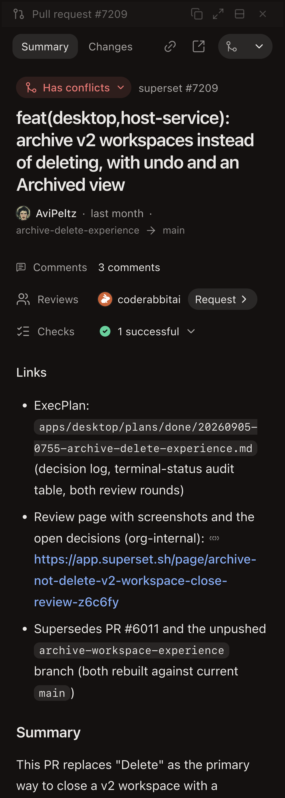
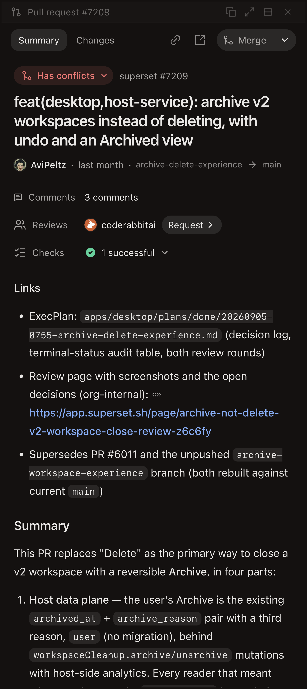
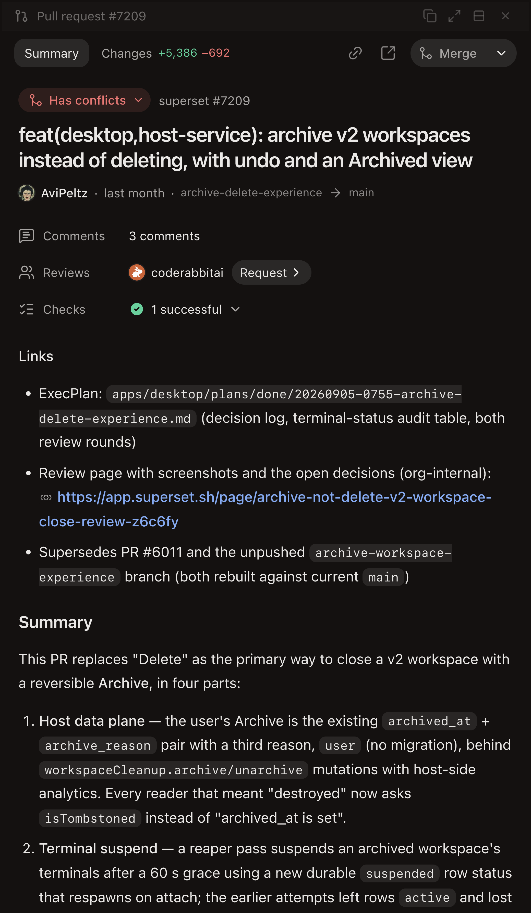
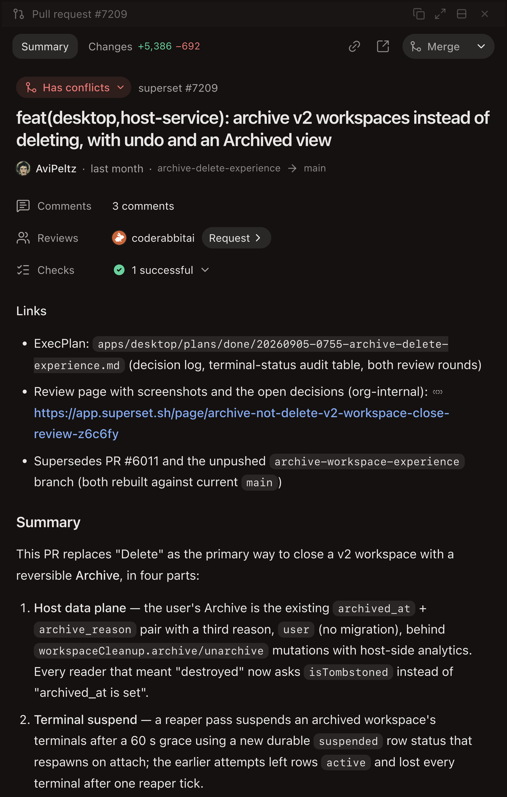
Summary tab
320px pane
Before: the action row wraps under the tabs, the title runs five lines at 1.75rem, and the Reviews chip breaks onto its own line. After: one header row, four-line title at 1.25rem, 16px gutters.
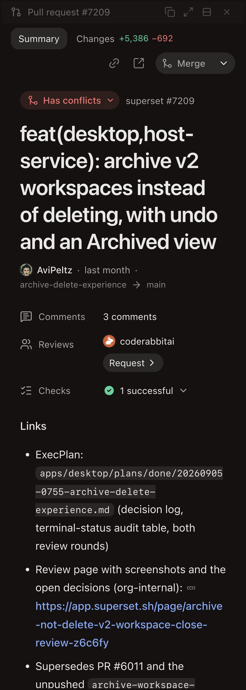
400px pane
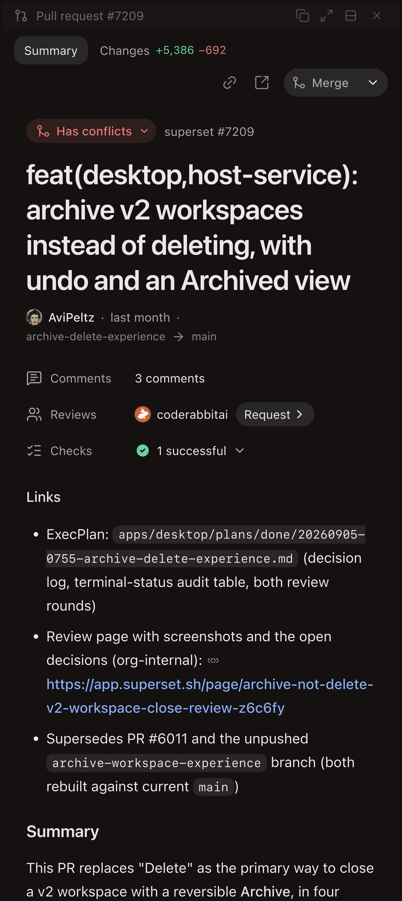
520px pane
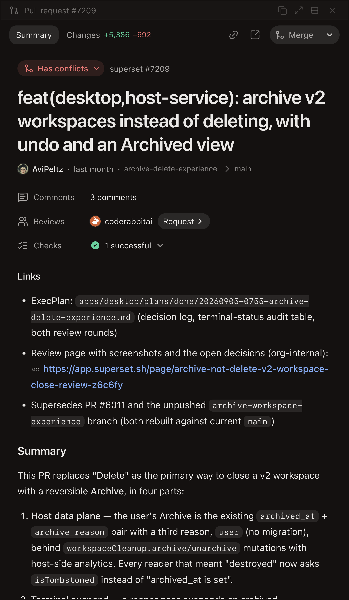
570px pane (the widest this split allows)
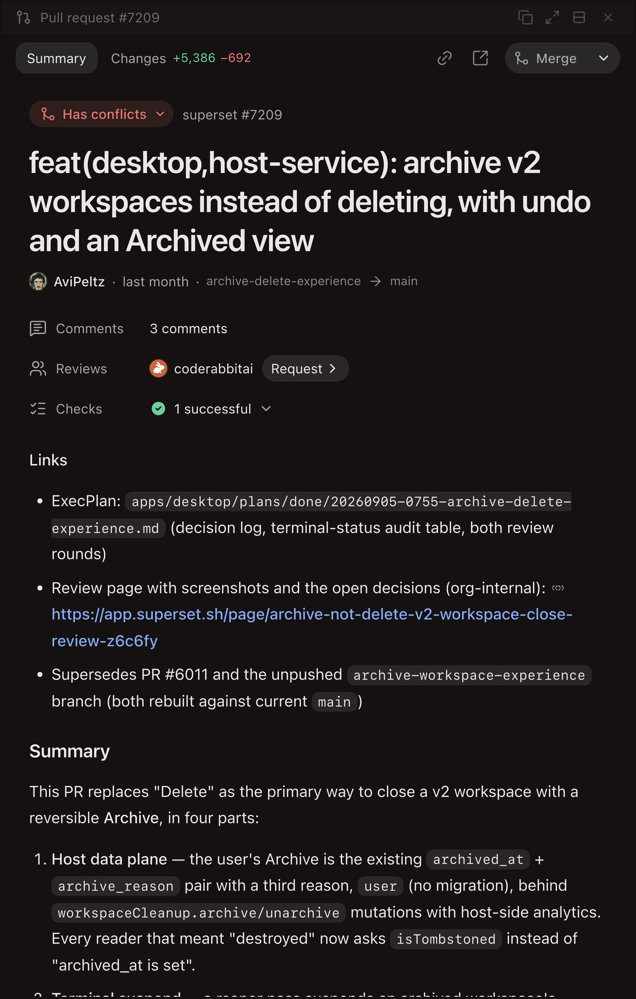
Changes tab
The title row above the files toolbar picks up the same gutter and the top bar stays on one line. The diff itself now runs edge to edge below 40rem (16px gutters to 56rem, 24px above), shown in the third pair on a different PR after the first captures.
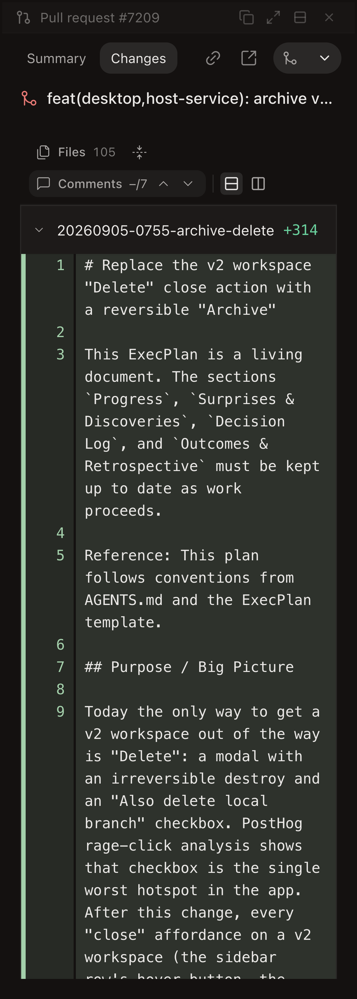
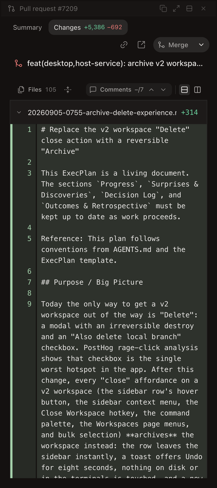
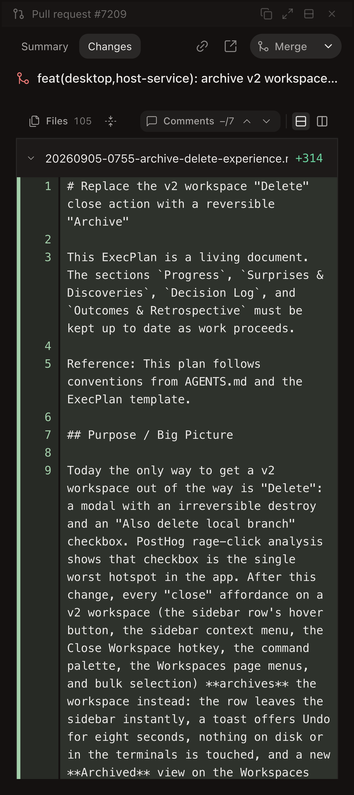
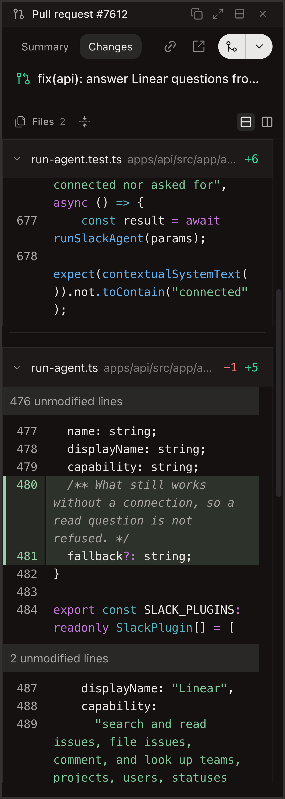
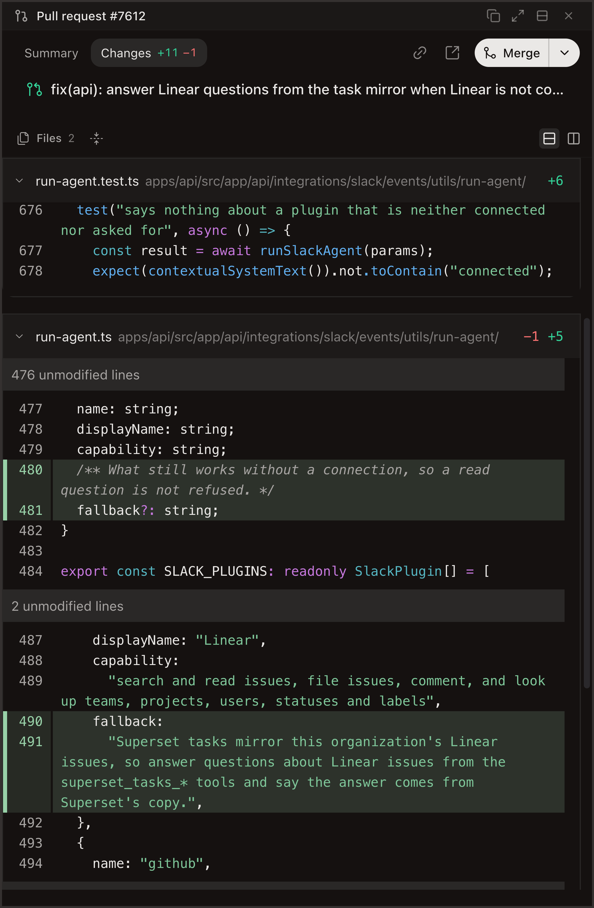
Conversation and composer (after)
Scrolled to the end of the Summary: the collapsible review rows, the comment pill, and below it the workspace's inline review threads.
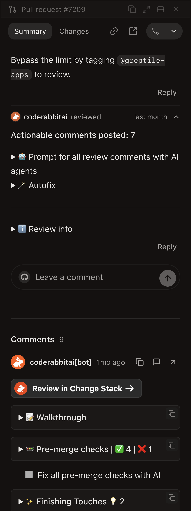
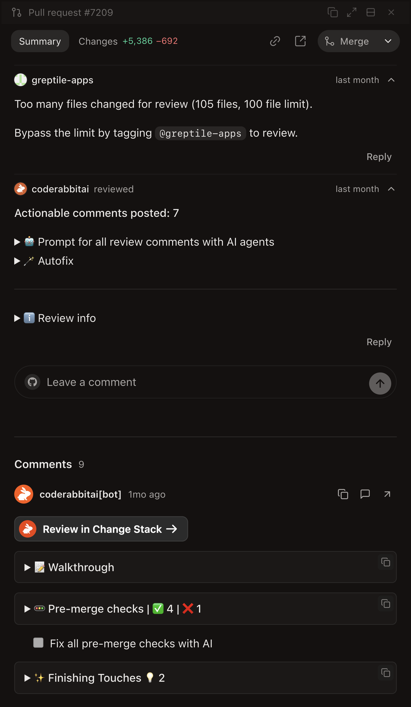
Bottom of the pane (inline review threads)
These are the pre-existing workspace review threads. They were already fluid; included so the whole pane is covered.
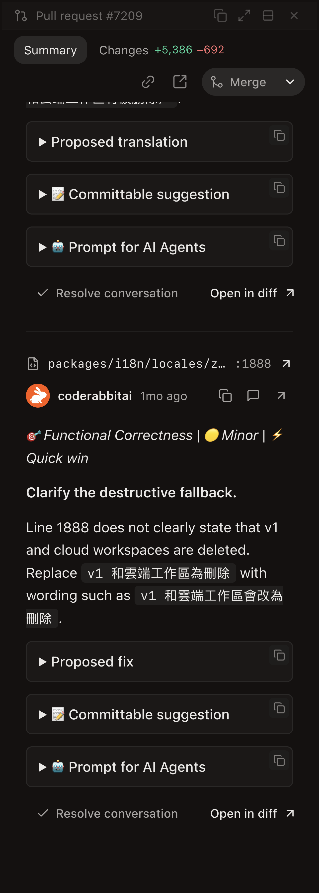
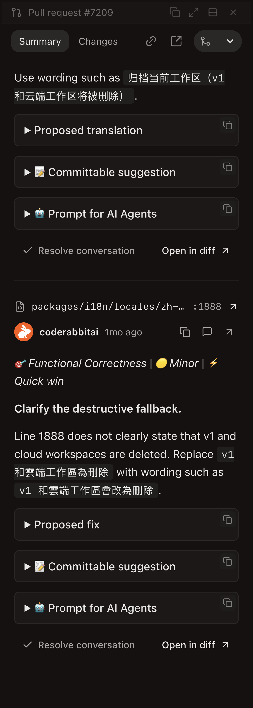
How it was tested
| Check | Result |
|---|---|
| Pane widths 320, 400, 485, 520, 570px, each on Summary top, Summary end, and Changes | Captured before and after, same drag script |
| Horizontal overflow of the Summary viewport | scrollWidth === clientWidth at 411px; inner wrapper computes display: block |
| Top bar never wraps | Row is h-11 with no flex-wrap; tabs scroll before anything wraps |
| Merge / Ready labels when folded | sr-only, so the accessible name is kept |
bun run typecheck (desktop) | exit 0 |
| Desktop PR suites + PullRequestPane fixtures | 51 pass |
Files
v2-workspace/$workspaceId/hooks/usePaneRegistry/components/PullRequestPane/PullRequestPane.tsx: header row becomes thetopbarcontainer, single rowpull-requests/components/PullRequestDetailTabs: diff stat hides below 30rempull-requests/components/PullRequestActions: label fold moves from 34rem to 23rempull-requests/components/PullRequestPageBody: gutters 24→16px below 36rem; viewport wrapper forced to blockpull-requests/components/PullRequestItemHeader: title 1.75→1.5→1.25rempull-requests/components/PullRequestInfo: row label column 96→80px below 30rempull-requests/components/PullRequestDetailContent+PullRequestTabTitle: Changes wrapper is adetailcontainer so its title shares the gutter rule